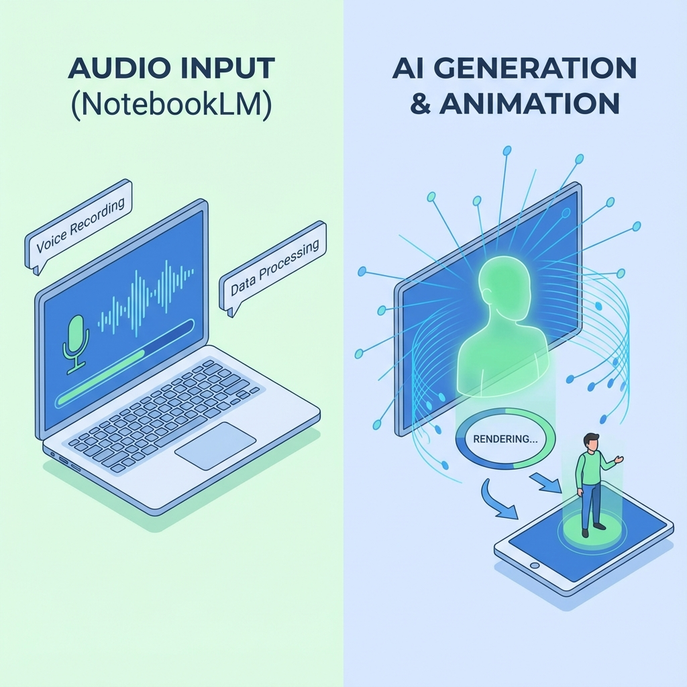
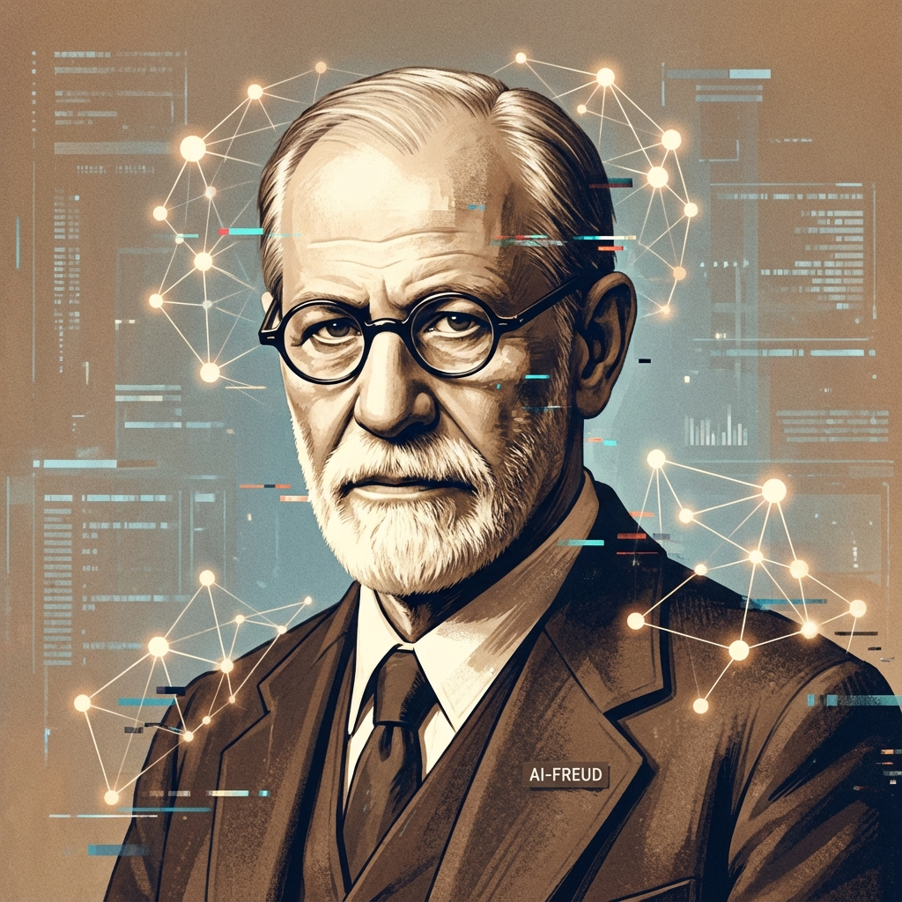

V minulém článku jsme psali, že Google oficiální funkci videa teprve chystá. Ale vaši studenti nechtějí čekat. Chtějí vidět "youtubera", ne poslouchat rádio. Máme pro vás skvělou zprávu: tu magii můžete vytvořit už dnes. A je to jednodušší, než si myslíte.
Tento návod je napsán pro každého učitele, i pro toho, kdo s AI nástroji teprve začíná. Pokud umíte stáhnout soubor a kliknout myší, zvládnete vytvořit své první AI video do 20 minut.
Co budeme dělat? (Princip kouzla)
Je to jako skládání lega. Spojíme dvě různé kostičky:
- Hlas (Audio): Ten už máme. Je to ten skvělý, chytrý "podcast", který vám vygeneroval Google NotebookLM z vašich učebnic.
- Tvář (Video): Tu si půjčíme od jiného nástroje. Použijeme tzv. "avatara" – digitální postavu, která vypadá jako člověk.
Naším cílem je vzít audio z Googlu a vložit ho do úst avatarovi, aby to vypadalo, že to říká on.
- Počítač s připojením k internetu.
- Váš NotebookLM (kde už máte nahrané nějaké učivo).
- Zhruba 20 minut času a hrnek kávy ☕.
FÁZE 1: Získání "hlasu" z NotebookLM
Nejprve musíme dostat tu skvělou audio debatu ven z Googlu do vašeho počítače.
- Otevřete si svůj sešit v NotebookLM.
- Ujistěte se, že máte vygenerovaný Audio Overview (ten velký přehrávač vpravo nahoře).
- Klíčový krok: Podívejte se na ten přehrávač. V jeho pravém rohu uvidíte tři malé tečky nad sebou (menu). Klikněte na ně.
- Objeví se nabídka. Klikněte na Download (Stáhnout).
- Do vašeho počítače se uloží soubor s koncovkou .mp3 nebo .wav.
Tip: Soubor si hned přejmenujte, např. na "Audio_Bitva_u_Lipan.mp3", ať ho pak snadno najdete.
Máme hlas. Fáze 1 hotova.
FÁZE 2: Výběr "tváře" (Registrace do HeyGen)
Pro vytvoření videa použijeme jeden z nejlepších nástrojů současnosti – HeyGen. Je velmi intuitivní a na první pokusy je zdarma.
- Otevřete v prohlížeči stránku www.heygen.com.
- Vpravo nahoře klikněte na "Try HeyGen for Free" (nebo "Get started").
- Zaregistrujte se. Nejrychlejší cesta je kliknout na "Continue with Google".
FÁZE 3: Spojení hlasu a tváře (Tvorba videa)
Teď přichází ta zábavná část. Jste v prostředí HeyGen.
Krok A: Založení nového videa
Na hlavní obrazovce klikněte vpravo nahoře na fialové tlačítko "Create Video" a vyberte "Landscape" (na šířku).
Krok B: Výběr moderátora (Avatara)
Vlevo na obrazovce klikněte na záložku "Avatar". Vyberte si digitálního herce, který se hodí k vašemu tématu. Klikněte na něj a on se objeví na plátně.
Krok C: Vložení audia z NotebookLM (Nejdůležitější!)
Musíme avatarovi říct, co má říkat.
- Podívejte se do dolní části obrazovky. Je tam textové pole "Type your script here". TO MY NECHCEME.
- Těsně nad tímto polem jsou záložky. Klikněte na tu s názvem "Audio Script" (ikona mikrofonu/noty).
- Klikněte na tlačítko pro nahrání souboru ("Upload Audio").
- Vyberte váš soubor z NotebookLM ("Audio_Bitva_u_Lipan.mp3").
Krok D: Generování (Kouzlo)
Vpravo nahoře klikněte na "Submit" (Odeslat). Potvrďte a čekejte. Výroba videa trvá několik minut.
FÁZE 4: Hotovo! Stahujeme a promítáme
Až bude video hotové, najdete ho ve svém seznamu videí. Přehrát si ho – uvidíte, že avatar hýbe rty dokonale do rytmu audia. Stáhněte si ho jako .mp4 tlačítkem Download.
Jak to použít ve výuce?
- Vložte MP4 do PowerPoint prezentace.
- Nahrajte ho do Google Classroom nebo Teams.
- Pusťte ho na začátku hodiny.
V NotebookLM mluví dva lidé. HeyGen ve verzi zdarma umí jen jednoho avatara. Pro začátek stačí vybrat jednoho avatara, který "přeříká" celý dialog. I tak je "wow efekt" zaručen.
Gratulujeme! Právě jste vstoupili do éry multimodální výuky. Vaše přípravy už nikdy nebudou jako dřív.